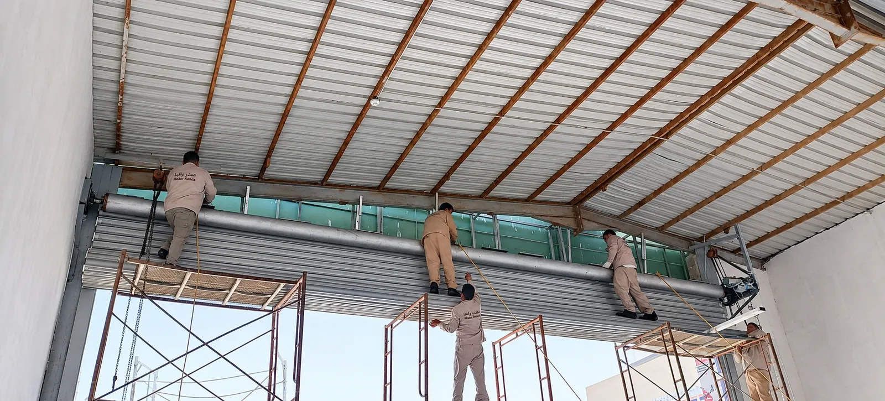

صيانة أبواب الكراج والأبواب الأوتوماتيكيةGarage Door & Automatic Door Maintenance
صيانة أبواب الكراج والأبواب الأوتوماتيكية من مدار رندا في جميع مدن القصيم، مع توفر قطع الغيار.Garage door and automatic door maintenance from Madar Randa across all Al-Qassim cities, with spare parts available.
أعطال نفحصها ونعالجهاFaults We Diagnose and Fix
الباب لا يفتح أو لا يغلق بالكامل.The door does not fully open or close.
باب الكراج لا يستجيب للريموت.The garage door does not respond to the remote.
تعلّق الباب أو بطء حركته.The door gets stuck or moves slowly.
أصوات غير معتادة أثناء التشغيل.Unusual noises during operation.
توقف المحرك أو عدم انتظام عمله.The motor stops or runs irregularly.
خلل الحساسات أو وحدات التحكم.Faulty sensors or control units.
أرسل صورة أو فيديو يوضح المشكلة، وسيتواصل معك الفريق لتنسيق الفحص.Send a photo or video showing the problem, and the team will contact you to arrange an inspection.
خدمات صيانة أبواب أوتوماتيكية وإصلاحهاAutomatic Door Maintenance and Repair Services
فحص وتشخيص الأعطالFault Inspection & Diagnosis
نفحص الأجزاء الميكانيكية والكهربائية وأنظمة التحكم لتحديد مصدر المشكلة والأعمال المطلوبة.We inspect mechanical and electrical parts and control systems to identify the source of the problem and the work required.
الإصلاح واستبدال القطعRepair & Parts Replacement
نقدم خدمات تصليح أبواب أوتوماتيكية ومعالجة أعطال الحركة والمحركات، مع استبدال الأجزاء التالفة بقطع متوافقة مع النظام.We repair automatic doors and fix movement and motor faults, replacing damaged parts with parts compatible with the system.
تصليح باب الكراج الكهربائيElectric Garage Door Repair
نفحص باب الكراج الرول والسيكشنال، بما يشمل المحرك ومسارات الحركة وأجزاء الرفع والتحكم، ونحدد الإصلاحات المطلوبة حسب حالة النظام.We inspect roller and sectional garage doors, including the motor, tracks, lifting parts and controls, and determine the repairs needed based on the system's condition.
الضبط والبرمجةAdjustment & Programming
نضبط حركة الفتح والإغلاق، ونقدم برمجة الأبواب الأوتوماتيكية والريموتات ووحدات التحكم حسب نوع النظام وتوافق مكوناته.We adjust the opening and closing movement, and program automatic doors, remotes and control units according to the system type and component compatibility.
اختبار التشغيل والأمانOperation & Safety Testing
نختبر حركة الباب واستجابة وحدات التحكم ووظائف الأمان المتوفرة بعد إتمام الصيانة.We test the door movement, control-unit response and available safety functions after the maintenance is complete.

صيانة دورية وعقود للمنشآتPeriodic Maintenance and Contracts for Facilities
حافظ على انتظام التشغيل مع الصيانة الدورية من مدار رندا. نفحص الأجزاء المعرضة للاستهلاك، ونضبط الحركة، ونجري أعمال التنظيف والتزييت اللازمة وفق متطلبات كل نظام، للمساعدة في تقليل الأعطال المفاجئة.Keep everything running smoothly with periodic maintenance from Madar Randa. We inspect wear-prone parts, adjust movement, and carry out the necessary cleaning and lubrication according to each system's requirements, helping reduce sudden breakdowns.
نوفر عقود صيانة للمنشآت، بنطاق أعمال وجدول زيارات يتم الاتفاق عليه حسب عدد الأنظمة وطبيعة استخدامها.We offer maintenance contracts for facilities, with a scope of work and visit schedule agreed according to the number of systems and how they are used.
نقدم خدمات الصيانة في جميع مدن القصيمWe Provide Maintenance Across All Cities of Al-Qassim
- بريدةBuraydah
- عنيزةUnaizah
- الرسAr Rass
- البكيريةAl Bukayriyah
- البدائعAl Badai
- المذنبAl Mithnab
تشمل الخدمة بقية مدن القصيم، مع تنسيق موعد الزيارة عبر واتساب.The service covers the rest of Al-Qassim's cities, with visits arranged via WhatsApp.
خطوات طلب الصيانةHow to Request Maintenance
أرسل تفاصيل المشكلةSend the Problem Details
شاركنا نوع المنتج ووصف العطل وصورة أو فيديو، مع موقعك وبيانات التواصل.Share the product type, a description of the fault and a photo or video, along with your location and contact details.
تنسيق الزيارةArranging the Visit
يراجع الفريق التفاصيل ويتواصل معك لتحديد الموعد المناسب.The team reviews the details and contacts you to set a suitable appointment.
الفحص وتوضيح الأعمالInspection & Scope of Work
نفحص النظام ونوضح سبب العطل وأعمال الصيانة المطلوبة قبل التنفيذ.We inspect the system and explain the cause of the fault and the maintenance work required before carrying it out.
التنفيذ واختبار التشغيلExecution & Operation Test
ننفذ الأعمال المطلوبة ونتحقق من تشغيل النظام بعد الانتهاء.We carry out the required work and check the system operates correctly once finished.
الأسئلة الشائعةFrequently Asked Questions
اطلب صيانة الأبواب والبوابات في القصيمRequest Door and Gate Maintenance in Al-Qassim
أرسل صورة أو فيديو للعطل وموقعك عبر واتساب، ونتواصل معك لتنسيق الزيارة.Send a photo or video of the fault and your location on WhatsApp, and we'll contact you to arrange a visit.